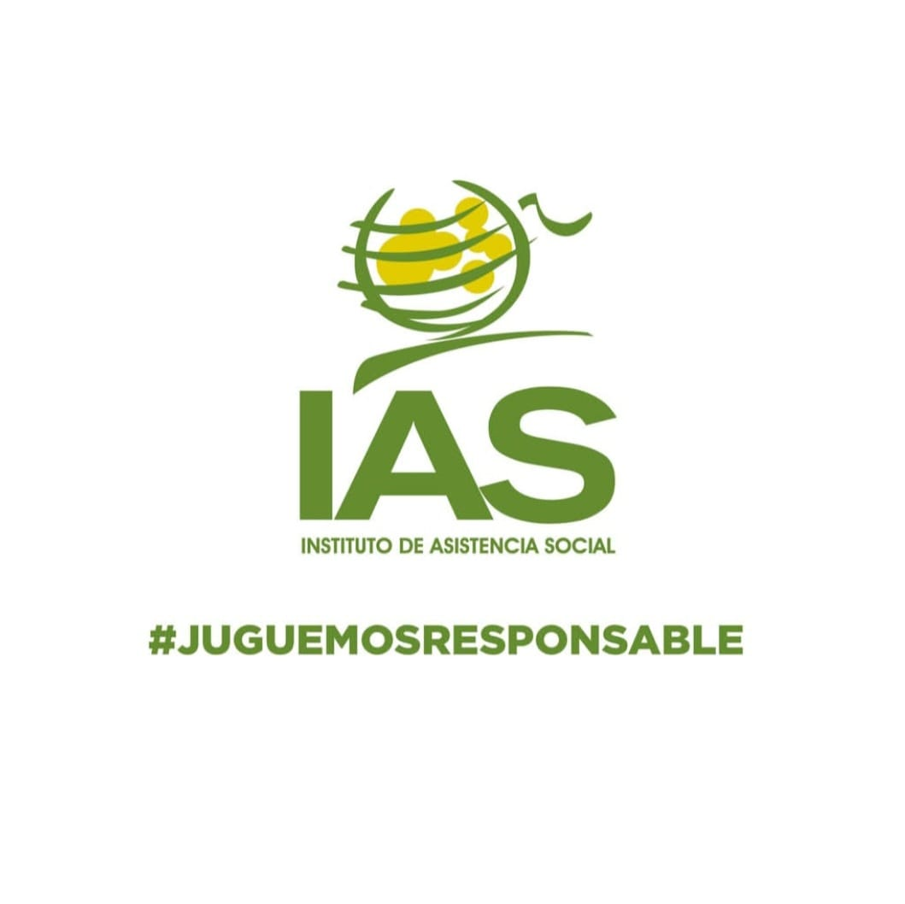
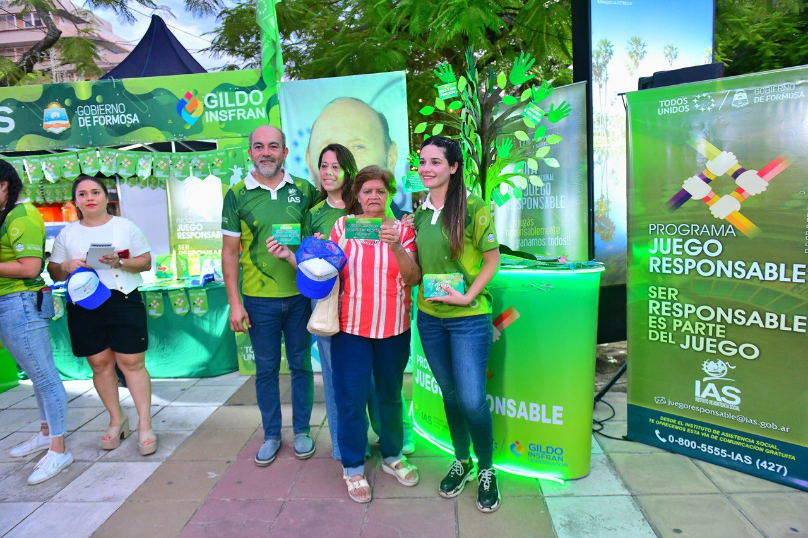

Bienvenidos al IAS
El Instituto de Asistencia Social (IAS) es el organismo oficial de Formosa encargado de la regulación, fiscalización y control de los juegos de azar en toda la provincia. Fue creado con el propósito de garantizar que la actividad del juego se desarrolle dentro de un marco legal, transparente y socialmente responsable.
A través de su gestión, el IAS destina una parte significativa de los fondos recaudados a programas sociales, educativos y de salud que benefician a la comunidad formoseña. Su función no se limita al control administrativo, sino que también promueve activamente el juego responsable y trabaja en la prevención de la ludopatía como problema de salud pública.

Juego Responsable
El IAS impulsa campañas de concientización sobre el juego responsable, fomentando hábitos saludables entre los ciudadanos y especialmente protegiendo a los grupos más vulnerables.
